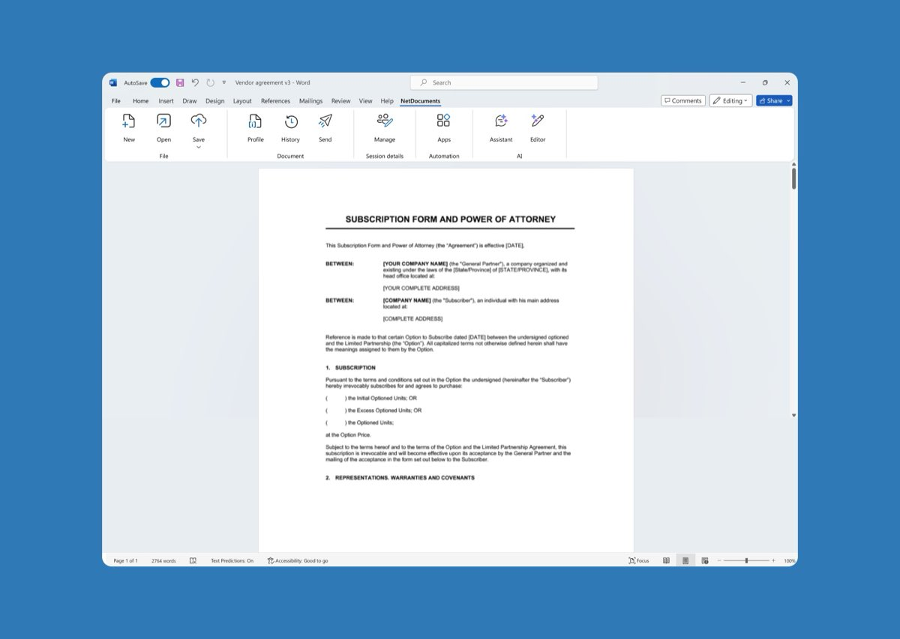
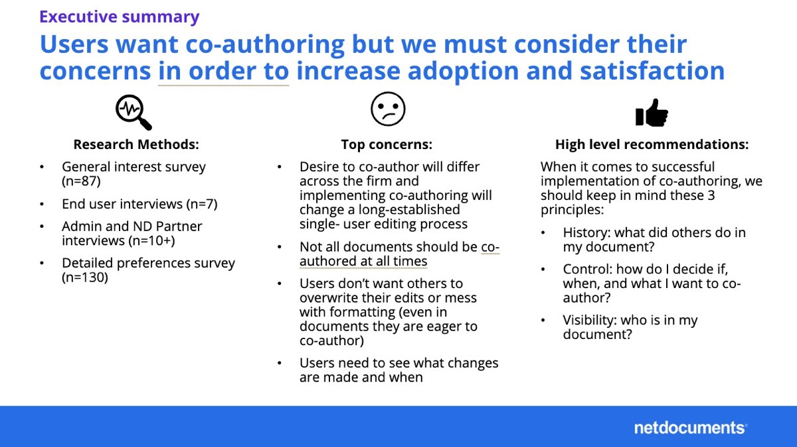
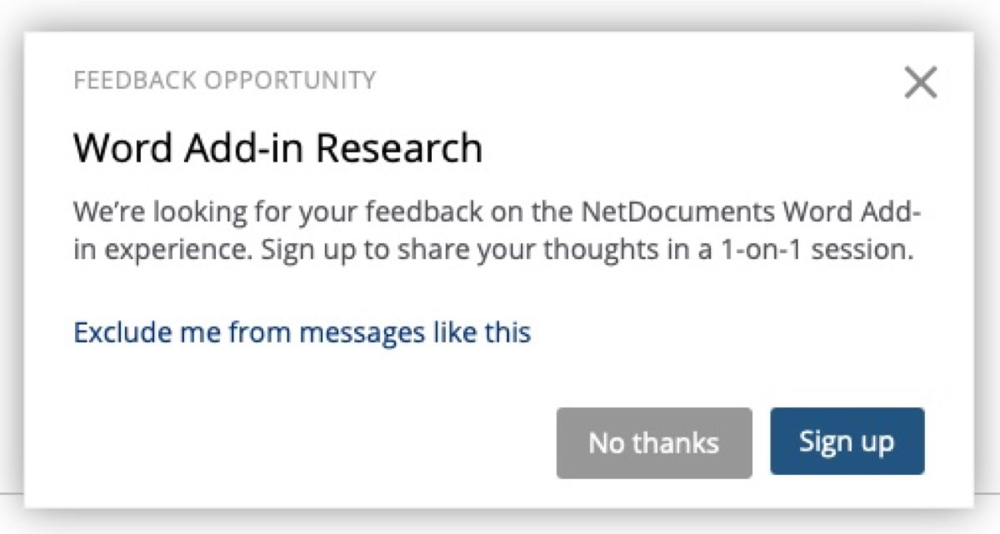
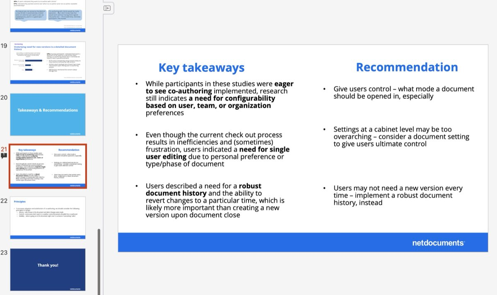
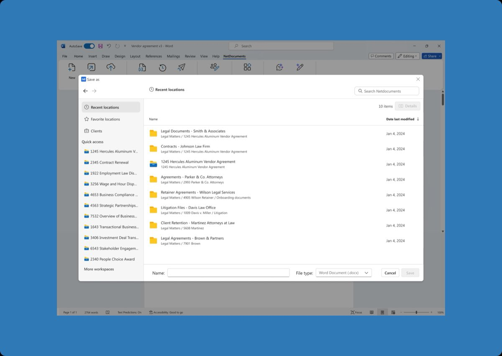
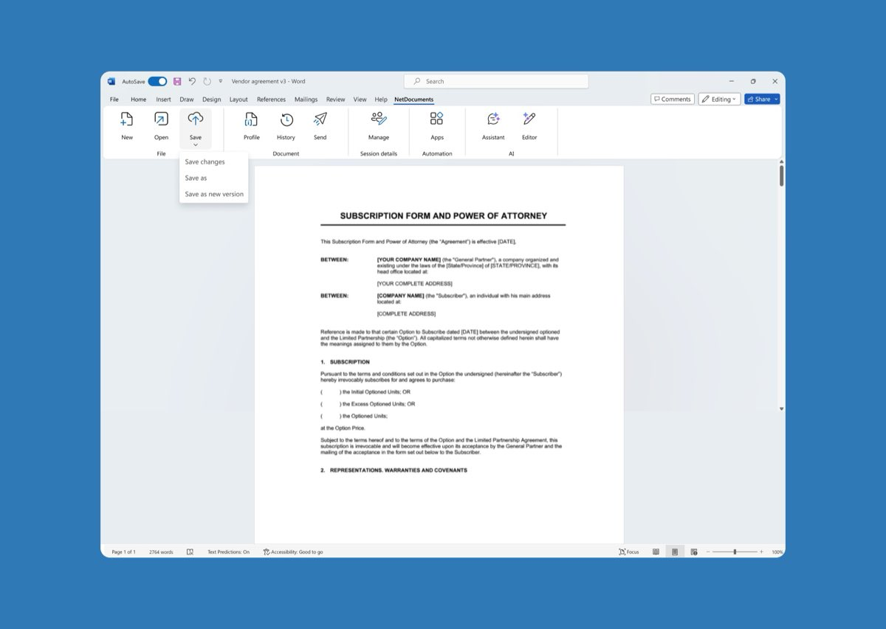

NetDocuments Word Add-in
Secure co-authoring and document management, right inside Microsoft Word.

Bringing document management into Word.
Legal professionals spend the majority of their day drafting and editing in Microsoft Word. Historically, NetDocuments users had to constantly move between the ND web platform and Word to open files, save changes, manage versions and add required metadata, a workflow that fragmented focus and slowed work.
I led end to end UX design of a net new Word Add-in that brings NetDocuments directly into the Word ribbon. Users can now open matters, save documents, co-author in real time and stay compliant, without ever leaving Word.
Shipped the first native Word Add-in in the NetDocuments M365 integration suite, a brand new product surface built from zero
Research participants across surveys and interviews: attorneys, IT admins and firm leadership
Compliance compromises: all firm metadata, versioning and audit trail requirements met in the shipped product
Legal work happens in Word. Document management did not.
Users were forced to jump between Word and the NetDocuments web platform to open files, save updates, manage versions and add metadata. This constant task switching broke concentration and made real time collaboration nearly impossible in a profession where accuracy and speed are critical.
The legacy checkout model meant only one person could edit a document at a time, creating firm wide bottlenecks on active matters. Worse, documents saved locally outside of ND created real compliance exposure that legal teams could not afford to ignore.
I lose my train of thought every time I have to go back to the browser to save or check a version. I just want to stay in Word and do my work.
Senior associate attorney, user research interviewLeading a net new product surface.
As lead product designer I owned end to end UX for the first native NetDocuments surface inside Microsoft 365, from the earliest research through the shipped product. I drove discovery, ran the synthesis workshops that aligned the team on a single design challenge, and partnered closely with a second designer, product management and the Word and M365 engineering teams to keep the design honest against real platform constraints.
This was as much facilitation and prioritization as it was pixels. Two calls shaped the entire product.
Three session modes, not one default
Research showed no single co-authoring default could serve every firm: control mattered as much as collaboration. Instead of forcing one model, I designed three configurable session types (checkout, open co-auth, protected co-auth) with admin level control. Configurability was the adoption strategy, not scope creep.
Keep every action inside the ribbon
The core insight was that leaving Word, even briefly, was a hard adoption blocker. So I embedded the entire open, save, version and co-auth flow directly in the ribbon, modeled on Microsoft Fluent patterns, rather than launching a browser or side panel.
Understanding how legal teams actually work.
The project opened with a broad mixed method research effort: a general interest survey (n=87), a detailed preferences survey (n=130), end user interviews (n=7), and admin and partner interviews (n=10+). An in-product feedback modal recruited active users mid workflow, reaching people during real sessions, not in a lab setting.
The research surfaced a clear tension: attorneys wanted co-authoring, but were deeply concerned about losing control of their documents in the process.



Word is the primary workspace
Every participant opened Word first. Any friction requiring them to leave, even briefly, was treated as a hard adoption blocker, not a minor inconvenience.
Control matters as much as collaboration
Even users eager to co-author did not want others overwriting their edits or reformatting shared documents. Session control and collaborator visibility were non-negotiable.
History over new versions
Users needed robust change history and the ability to revert, more than auto-creating new versions on close. This directly reframed the feature priority in the PRD.
The Word Add-in, shipped.
The final product brings NetDocuments natively into the Microsoft Word ribbon. Attorneys can open documents from any client matter, save back to the right location with required metadata, co-author with session level control, and access version history, all without leaving Word.


What we delivered.
Net new Word Add-in shipped
Delivered a production ready Word Add-in meeting users where they work, inside the tool that drives their entire day. The first native ND surface in the M365 ecosystem.
Co-authoring with control
Three configurable session types let firms adopt real time collaboration without giving up the editing control and visibility their compliance teams require.
Compliance held
All firm metadata, versioning and audit trail requirements were met in the shipped product, closing the local-save exposure that the old workflow created.